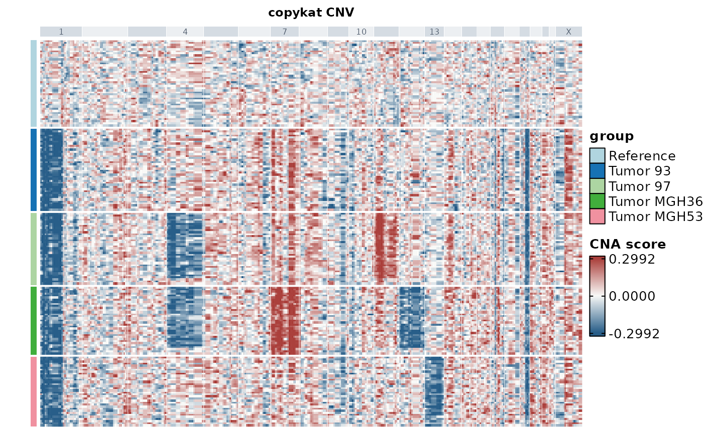

Plot CNV results
Usage
CNVPlot(
object,
plot_type = c("heatmap", "dim", "spatial", "bar", "tree"),
tool_name = "CNV",
method = NULL,
group.by = NULL,
reduction = NULL,
value = NULL,
cluster_tree_by = c("cluster", "cell"),
palette = "Chinese",
palcolor = NULL,
heatmap_palette = "RdBu",
heatmap_palcolor = NULL,
title = NULL,
subtitle = NULL,
theme_use = "theme_scop",
theme_args = list(),
heatmap_limits = NULL,
srt = NULL,
...
)Source
The example uses expression and cell annotations from GSE70630.
Arguments
- object
A
Seuratobject.- plot_type
Plot type:
"heatmap","dim","spatial","bar", or"tree". Heatmaps show cells in rows and features in columns. Usecluster_columnsfor cells orcluster_rowsfor features; both default toFALSE.- tool_name
Name of the stored CNV results.
- method
CNV method.
NULLuses the active method.- group.by
A metadata column identifying cell groups.
- reduction
Reduction to plot.
NULLuses DefaultReduction.- value
Metadata column for
"dim","spatial", or"bar".- cluster_tree_by
Build the tree from cells or CNV clusters.
- palette, palcolor
Colors for discrete groups.
- heatmap_palette, heatmap_palcolor
Colors for heatmap scores. Defaults to muted blue, white, and red.
- title, subtitle
Plot title and ggplot subtitle.
- theme_use, theme_args
Theme name or function, plus extra theme arguments.
- heatmap_limits
Color limits.
NULLusesc(0.75, 1.25)for inferCNV andc(-1, 1)otherwise."auto"uses the 95th percentile of absolute deviations from the method's midpoint (1 or 0), with the method limits as fallback. A numeric pair sets the limits and must span the midpoint.- srt
Deprecated alias for
object; supply exactly one of the two. It will be removed in scop 1.0.0.- ...
Arguments passed to other functions.
Value
A ComplexHeatmap::Heatmap for "heatmap", an hclust for
"tree", or a ggplot, patchwork, or list of ggplot objects otherwise.
Examples
base_url <- paste0(
"https://raw.githubusercontent.com/broadinstitute/infercnv/",
"1def6c930335d00ddf251474abb0a31a1c74b0da/inst/extdata/"
)
files <- c("oligodendroglioma_expression_downsampled.counts.matrix.gz",
"oligodendroglioma_annotations_downsampled.txt")
counts_file <- tempfile(fileext = ".gz")
labels_file <- tempfile()
utils::download.file(paste0(base_url, files[1]), counts_file, mode = "wb")
utils::download.file(paste0(base_url, files[2]), labels_file, mode = "wb")
counts <- as.matrix(utils::read.delim(counts_file, row.names = 1, check.names = FALSE))
labels <- utils::read.delim(labels_file, header = FALSE, row.names = 1)
cohort <- labels[colnames(counts), 1]
colnames(counts) <- paste0("cell_", colnames(counts))
srt <- SeuratObject::CreateSeuratObject(Matrix::Matrix(counts, sparse = TRUE))
srt$group <- factor(
ifelse(startsWith(cohort, "malignant_"), sub("^malignant_", "Tumor ", cohort), "Reference"),
levels = c("Reference", "Tumor 93", "Tumor 97", "Tumor MGH36", "Tumor MGH53")
)
set.seed(42)
srt <- RunCNV(srt, method = "copykat", reference.by = "group", reference = "Reference")
#> ℹ [2026-11-13 05:45:55] Run copykat CNV backend with 10338 features and 184 cells
#> ℹ [2026-11-13 05:45:55] Attached copykat to the search path so its lazy data objects are resolvable by the backend
#> [1] "running copykat v1.2.5"
#> [1] "step1: read and filter data ..."
#> [1] "10338 genes, 184 cells in raw data"
#> [1] "9450 genes past LOW.DR filtering"
#> [1] "step 2: annotations gene coordinates ..."
#> [1] "start annotation ..."
#> [1] "step 3: smoothing data with dlm ..."
#> [1] "step 4: measuring baselines ..."
#> [1] "42 known normal cells found in dataset"
#> [1] "run with known normal..."
#> [1] "baseline is from known input"
#> [1] "step 5: segmentation..."
#> [1] "step 6: convert to genomic bins..."
#> [1] "step 7: re-adjust baseline ..."
#> [1] "step 8: final prediction ..."
#> [1] "step 9: saving results..."
#> [1] "step 10: ploting heatmap ..."
#> Time difference of 52.31923 secs
#> ✔ [2026-11-13 05:46:47] copykat CNV results stored in `srt@tools[[CNV]]`
CNVPlot(srt, group.by = "group", heatmap_limits = "auto")
